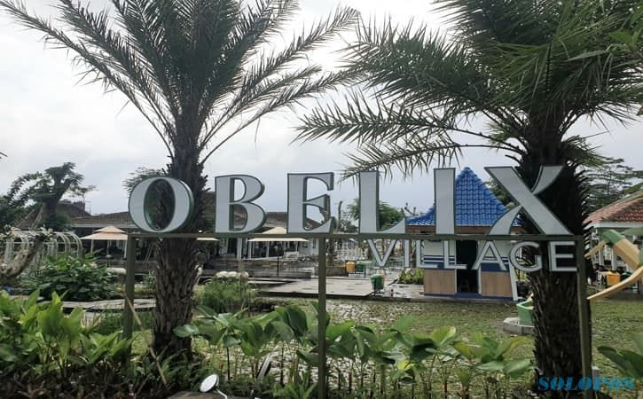

Obelix Village menjadi salah satu tempat wisata alam Yogyakarta yang populer. Obelix Village merupakan destinasi wisata baru yang terletak di dusun Krandon, Desa Pandowoharjo, Sleman. Namun berbeda dengan Obelix Hills, objek wisata Obelix Village lebih menggabungkan konsep keselarasan alam dari suasana alam pedesaan yang harmonis. Suasana alam pedesaaan ini diselaraskan melalui perpaduan little zoo, mini farm, flower garden, river deck, dan resto.
Kawasan little zoo Obelix Village yang dihuni kehidupan fauna berbagai jenis hewan bisa jadi tempat yang cocok sebagai wisata keluarga untuk edukasi anak-anak. Ada pula aktivitas menarik lainnya yang harus wisatawan coba khususnya anak-anak, yakni menaiki kuda berkeliling kawasan Obelix Village. Sedangkan di area flower garden disajikan dengan pemandangan kehidupan flora dari berbagai jenis tanaman bunga yang bisa jadi spot foto menarik dan kekinian tanpa harus membayar biaya tambahan. Wisatawan juga dapat belajar tentang bercocok tanam di kawasan mini farm, sebuah area yang ditanami berbagai jenis tanaman sayuran. Tak jauh dari taman bunga, wisatawan yang menyukai tantangan bisa mencoba area Taman Labirin. Tidak hanya mencari jalan keluar supaya tidak tersesat dan berputar-putar, tetapi kesabaran para pengunjung pun turut diuji. Selain itu, ada area river deck yang menawarkan tempat nyaman untuk menikmati suasana Obelix Village dengan suara air sungai mengalir.
Tersedia juga tempat makan bagi yang ingin mencicipi kuliner di Obelix Village, baik kuliner nusantara maupun kuliner barat. Resto Pulen Kopi Ponti yang menyediakan makan dan minuman dengan menu tradisional Nusantara. Sementara dan resto Petit Paris menyediakan menu kuliner barat/western dan aneka french bakery. Obelix Village juga menyediakan fasilitas umum lainnya seperti musala, gift shop, dan lain-lain. Pada sore hingga malam hari, wisatawan akan disuguhi performa live music untuk lebih menghangatkan suasana terutama di saat pergantian sore dan malam di Obelix Village dengan warna langit keemasan yang tampak cantik.